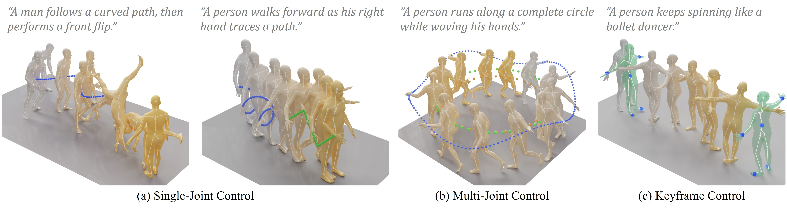

I'm a Ph.D. candidate in Information and Communication Engineering at the South China University of Technology (SCUT), advised by Professor Changxing Ding. Since January 2026, I have been a visiting student at The University of Hong Kong (HKU), advised by Professor Taku Komura and working with Zhiyang (Frank) Dou.
I received an M.S. in Electronics and Communications Engineering from SCUT in 2021, advised by Professor Yongjian Hu, and a B.S. in Electronic and Information Engineering from SCUT in 2018. My research interests lie in human motion generation, robotics, and multimodal learning.